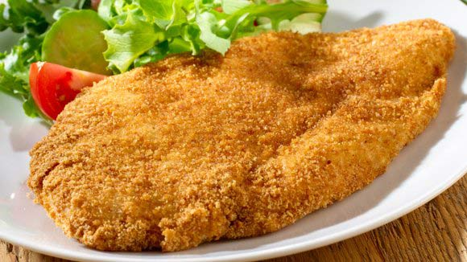

Milanesa de Pollo

Ingredientes
- 6 churrascos de pollo.
- 1 huevo.
- 1 chorrito de leche.
- 6 rodajas de pan.
- 1/2 taza de perejil.
- 1 cda. de cebolla deshidratada o cebolla en polvo.
- 1 cda. de queso rallado.
- Sal y pimienta.
- Aceite para freír.
Instrucciones
-
Colocar en la procesadora el pan, el perejil, el queso rallado y la cebolla.
Procesar hasta obtener un pan rallado fino, pero no tan fino como el comprado.
Este será nuestro rebozador y lo que dará todo el sabor diferente a la milanesa de pollo.
- Salpimentar los churrasquitos de pollo.
- Batir el huevo con una pizca de sal y el chorrito de leche.
- Pasar las milanesas por huevo primero y rebozar con nuestro súper power rebozador de milanesa de pollo.
-
Freír en aceite bien caliente hasta que estén doradas de ambos lados.
Colocar sobre papel absorbente.
También pueden hacerse al horno, con un poco de aceite debajo.